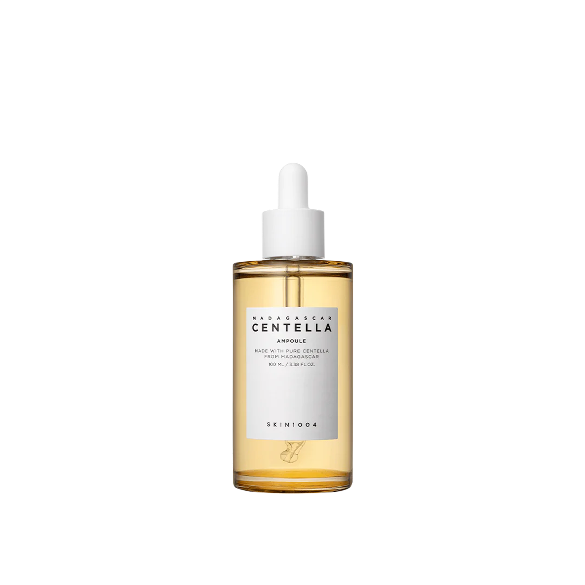
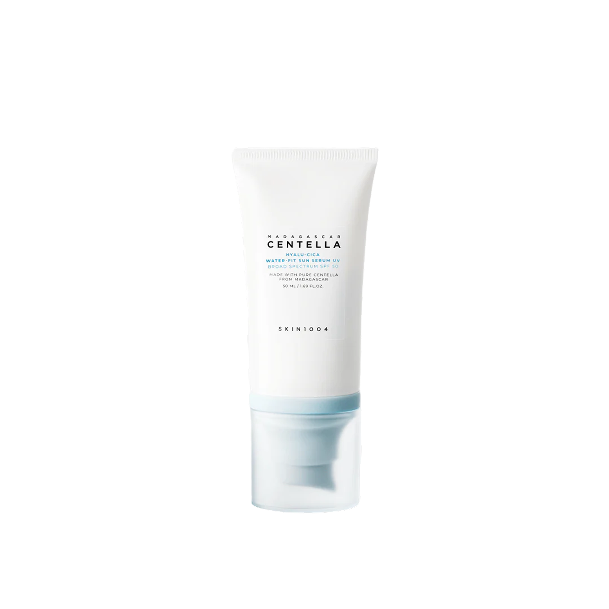
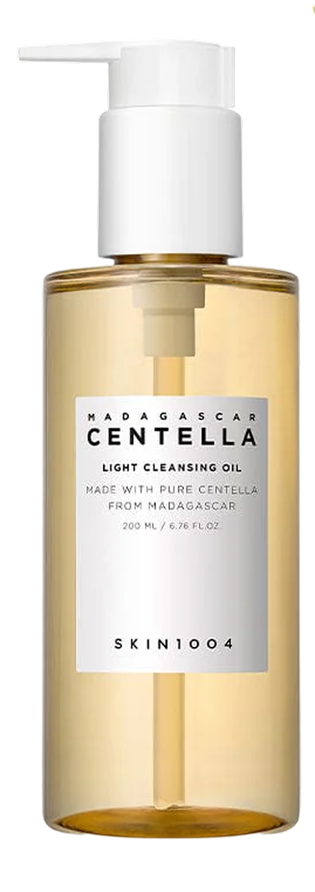

Madagascar Centella Ampoule
"הסרום הזה הוא פשוט קסם בבקבוק. בכל פעם שהעור שלי משתגע או נהיה אדמומי, כמה טיפות ממנו בלילה ואני קמה בבוקר עם עור רגוע ואחיד. לא זזה בלעדיו!"
אני רוצה כזה!

מותג טיפוח קוריאני, המבוסס על תמצית סנטלה אסיאטיקה (Centella Asiatica) איכותית המופקת ישירות מהטבע הבתולי של מדגסקר. המוצרים מיועדים להרגעת העור, שיקום מחסום העור והענקת לחות עמוקה.

"הסרום הזה הוא פשוט קסם בבקבוק. בכל פעם שהעור שלי משתגע או נהיה אדמומי, כמה טיפות ממנו בלילה ואני קמה בבוקר עם עור רגוע ואחיד. לא זזה בלעדיו!"
אני רוצה כזה!

"שנים חיפשתי קרם הגנה שלא ישאיר סימנים לבנים ולא ירגיש דביק ומציק. הקרם הזה מרגיש בדיוק כמו סרום לחות קליל, הוא נספג בשניות ונותן גלואו מטורף."
אני רוצה כזה!
אם העור שלך מגיב להכל, שורף או סובל מאדמומיות מתמשכת, המטרה היא שיקום והרגעה.
100% תמצית סנטלה טהורה. היא חודרת עמוק לעור, מזינה אותו ומזרזת ריפוי של פצעים וגירויים בלי להעמיס רכיבים מיותרים.
למי שסובלת מהפרשת שומן מוגברת, פצעונים ראשוניים או שחורים ורוצה ניקוי עמוק אך עדין.

שמן ניקוי קליל במיוחד שלא סותם נקבוביות. הוא ממיס את הסבום, הלכלוך והאיפור העמיד, ונשטף בקלות עם מים מבלי להשאיר שכבה שומנית.
כשהעור מרגיש צמא, מיובש מבנים (אפילו אם הוא שמן בחוץ) וצריך זריקת לחות רצינית.
שילוב מנצח של חומצה היאלורונית ללחות וקנטלה להרגעה. הוא נותן הגנה מקסימלית מהשמש הישראלית ובמקביל מתפקד כסרום לחות מרענן.